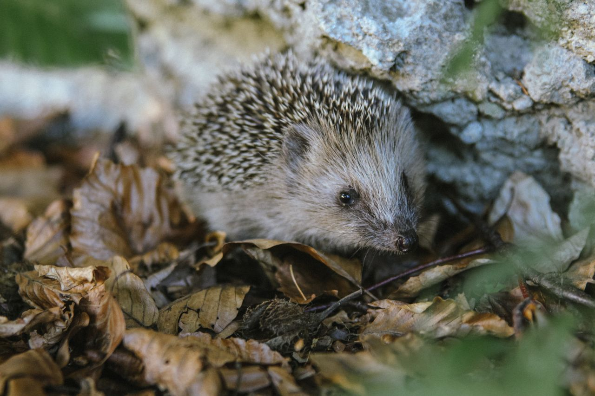

We have all the information you might need to take a good care of your new little friend!

Their Living Conditions
They require a cage of minimum four square feet, but usually the bigger the better.
Time spent outside of their cage is also crutial, so we advise you to have that in mind when thinking of adopting one.
Bedding should be soft and dust-free, such as paper-based bedding or fleece liners. Avoid cedar or pine shavings as they emit harmful oils. Provide tunnels, ramps, and small toys for mental stimulation.
Place the cage in a quiet, low-traffic area away from direct sunlight, drafts, and loud noises. Hedgehogs are sensitive to stress and can become ill from excessive disturbance.
What do they like to eat?
Hedgehog diets primarily consist of high-quality kibble, insects, and a small amount of fresh fruits and vegetables. A balanced diet provides the necessary nutrients and chitin required for their health.
It's crucial to monitor hedgehogs' food intake to prevent obesity. Daily requirements include 1-2 tablespoons of kibble and some insects, plus a teaspoon of fruits and vegetables.
Avoid feeding hedgehogs toxic or hard-to-digest foods, such as avocados, dairy, nuts, seeds, and processed human snacks.
Their Social Life
Hedgehogs are solitary creatures who love to live by themselves! Unlike many other pets, hedgehogs do not require socialization from their owners.
Just because hedgehogs do not require socialization from their owners does not mean they are anti-social though. In fact, hedgehogs love to play with toys and can be great companions, and the more time you spend with them, the closer bond you can form!
If you want to form a solid connection with your solitary hedgehog, you should let them have their desired alone time. Hedgehogs love living alone and prefer single-housing over multiple hedgehogs homes.